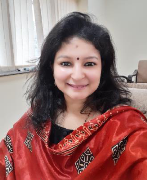

-
Book Review of Meanwhile Upriver by Chatura Rao, in 'Book Review', 2009.
-
'Interdisciplinarity in Research', Fortell, Jan 2014. (ISSN 2229-6557)
-
'Manushi: A Journal for Women and Society But not "Feminist"', BSSS Journal of Social Work, Bhopal, Jan 2015. (ISSN 0975-251X)
-
'Skopoi of a Translator: Assessing Vermeer's Skopos Theory', Fortell, Jan 2015. (ISSN 2229-6557)
-
'Problematising the Popularity of Chetan Bhagat', Academia Vol I, Jan-Jun 2016. (ISSN 2395-0161)
-
'The Sand Libraries of Timbaktu', The Book Review Vol XLI No 4, Apr 2017.
-
Book: Business English (Dreamtech Press, 2019)
-
Book: Business Communication (Dreamtech Press, 2020)

Dr. Deepti Bhardwaj
Associate Professor | Department of English
Ram Lal Anand College, University of Delhi

Education
Experience
- Ph.D Dept of English, University of Delhi 2020
- M.Phil Dept of English, University of Delhi 2009
- MA / MSc Dept of English, University of Delhi 2007
-
Associate Professor — November 2023 onwards
Ram Lal Anand College, University of Delhi -
Assistant Professor — 2013 to November 2023
Ram Lal Anand College, University of Delhi -
Assistant Professor — 2009 to 2012
St. Stephen's College, University of Delhi
Education
Career Profile
Area of Interest
Administrative Assignments
Areas of Interest / Specialization
- Indian Literature
- Visual Arts
Administrative Assignments
- Convenor: SPIC MACAY
- Convenor: Abhivyakti (English Literary Society)
- Conference Organised: The Body of Lies, 2015, RLA
Research Guidance
Ph.D. Supervision:
Pioneer Girl: Colonial Girlhood in Bessie Marchant's Adventure Fiction
Aishwarya Singh, Department of English, University of Delhi
Pioneer Girl: Colonial Girlhood in Bessie Marchant's Adventure Fiction
Aishwarya Singh, Department of English, University of Delhi
Research & Publications
Conference Organisation / Presentations
International Presentations
- 'A Teller of Tales: Literature and Culture in the Paintings of M. F. Husain' — Invited Lecture, Two-day International Conference on Cultures in Transformation: A Subcontinental Experience, Department of History, Ram Lal Anand College, University of Delhi. March 2024.
- 'Journey of Chandni Chowk: A Historical Public Sphere' — Invited Paper, Three-day International Conference, Motilal Nehru College. 2022.
- 'Understanding Changing Cityscape Through Lifewriting' — Annual International Conference, Germanic and Romance Studies Department. 2013.
- 'Problematising the Popularity of Chetan Bhagat' — Annual International Conference, Germanic and Romance Studies Department. 2010.
- 'Rural Spaces in Raag Darbaari and Godaan' — Annual International Conference, Germanic and Romance Studies Department. 2009.
National Presentations
- 'A Teller of Tales: Literature and Culture in the Paintings of M. F. Husain' — Invited Lecture, Two-Day National Seminar on Indian Visual Cultures through Paint, Print, and Digital Media: Shifting Patterns and Shaping Possibilities, Malaviya Moolya Anusheelan Kendra, BHU. January 2025.
- 'Reading Visuality: Paintings as Literature' — Invited Lecture (Keynote), Two-week workshop on Emerging Trends in Interdisciplinary Studies, DQAC, Department of English, Banaras Hindu University. 2023.
- 'Indian English Literature' — Invited Lecture, Two-day Interdisciplinary National Seminar, Shri Lal Bahadur Shastri National Sanskrit University. 2022.
- 'Peter Brook's Lear' — National Conference organised by Shakespeare Society of India. 2011.
- 'Representation of Women in Contemporary Media' — UGC Seminar, Bhim Rao Ambedkar College. 2011.
Associations
Member of
Other Activities
Coordinator of Certificate Course in Renaissance Art
Co-coordinator of Certificate Course in Hospitality and Tourism
Convenor of Certificate Course in History of English Literature, 2022 and 2023